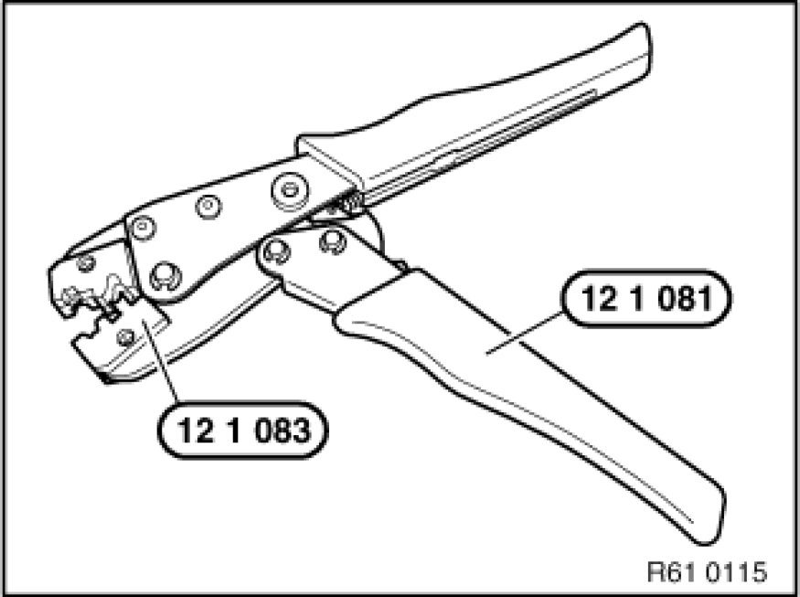
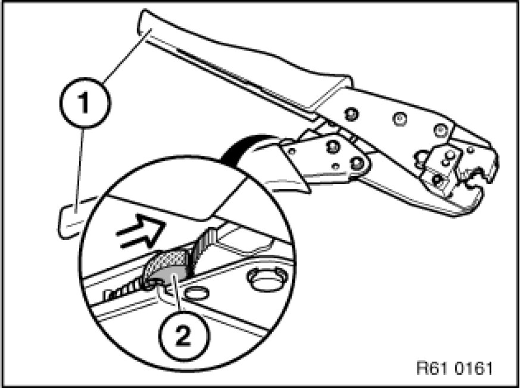
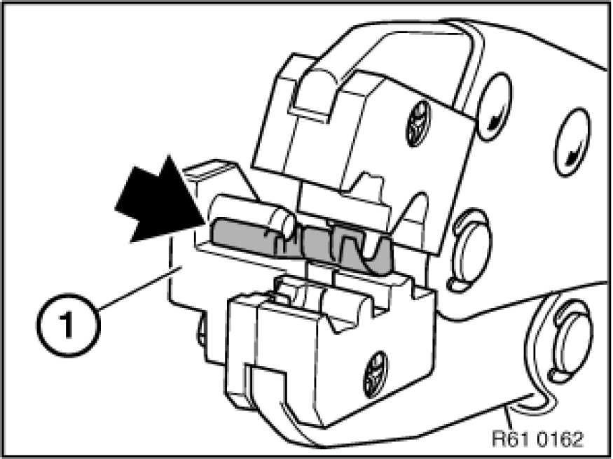
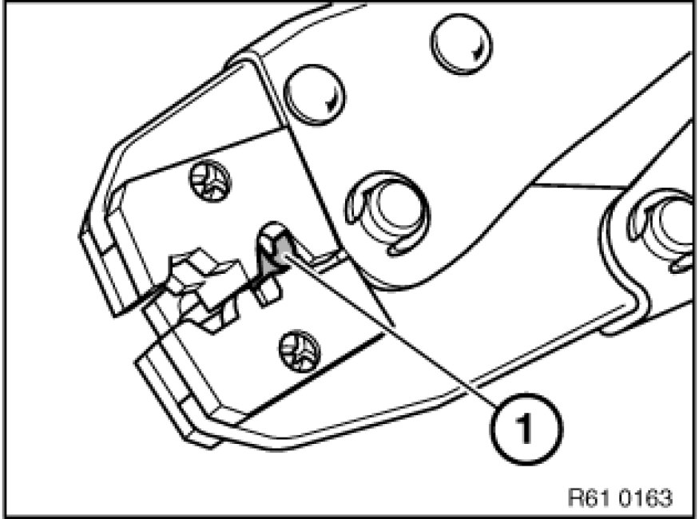
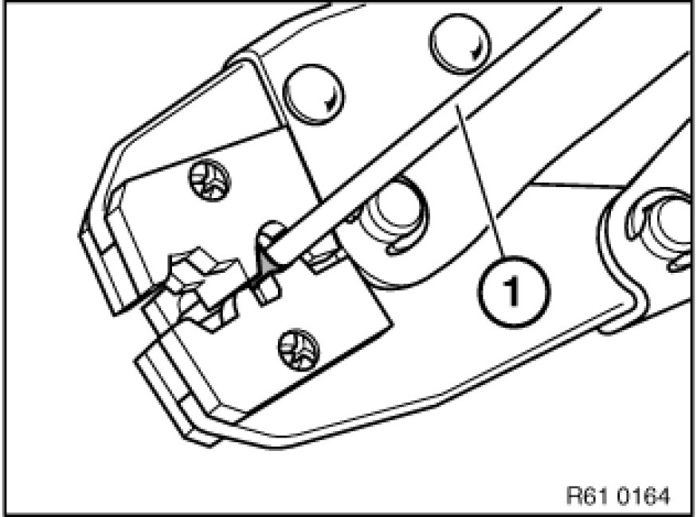
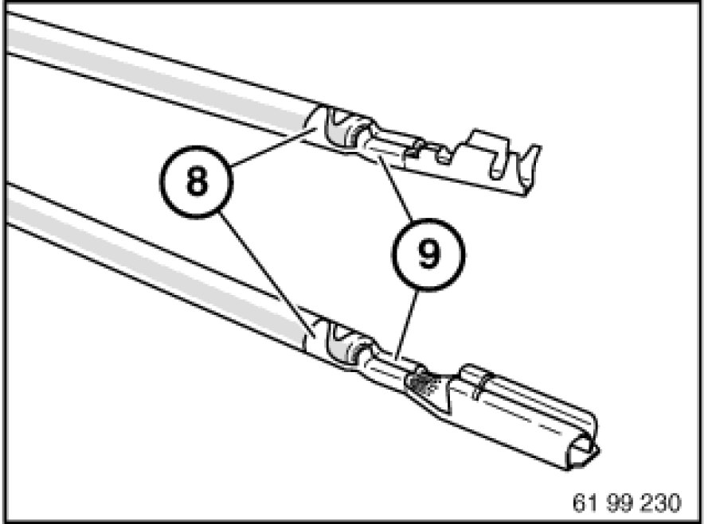
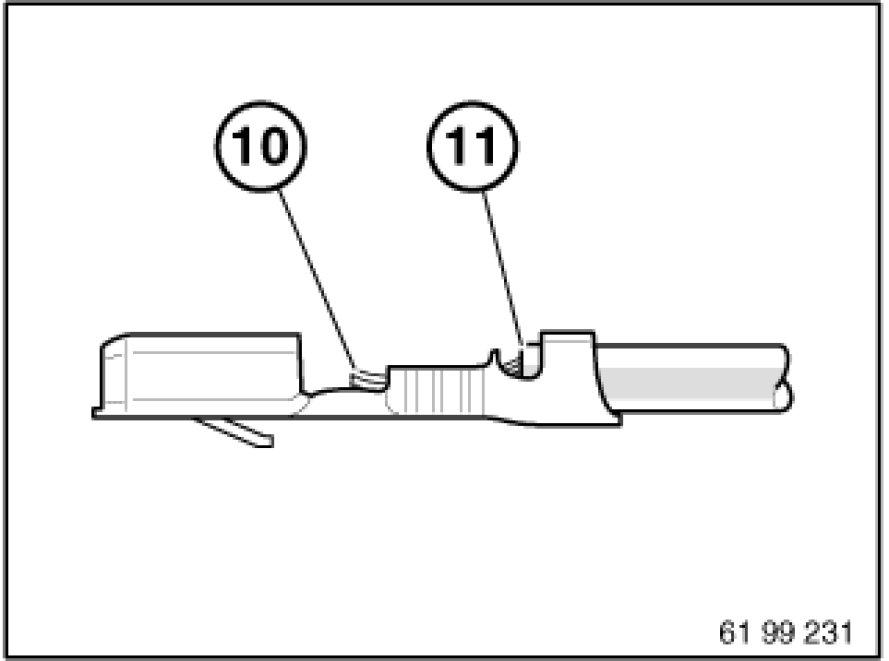
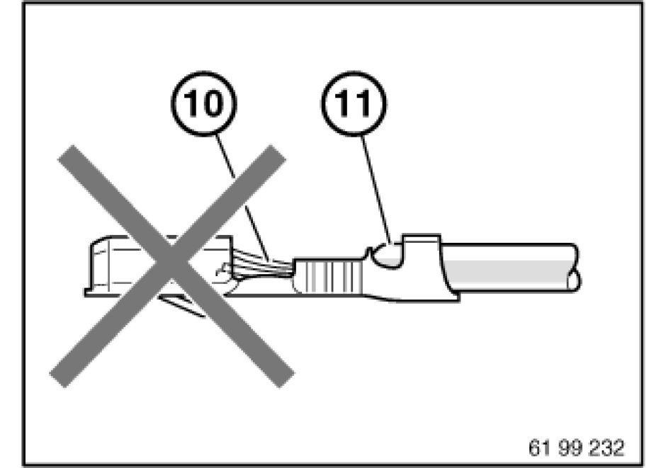
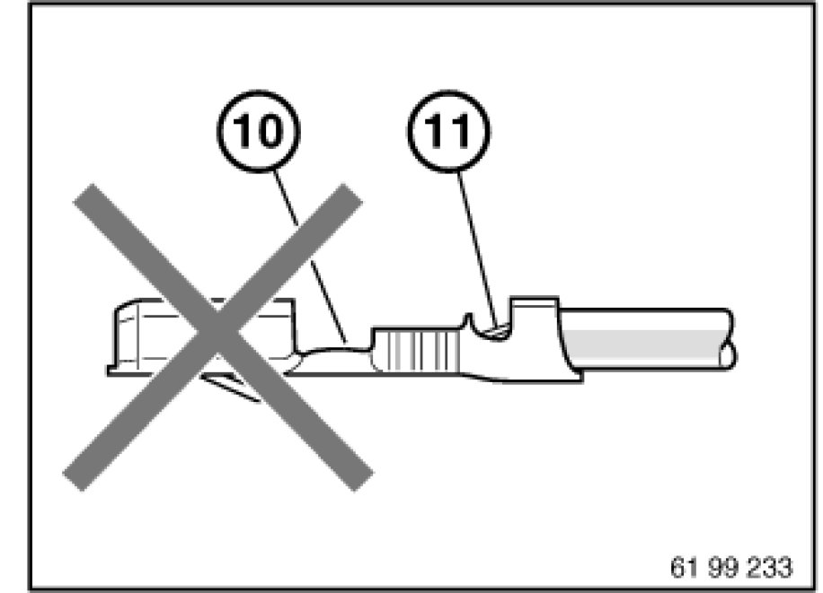

61 13 ... Crimping Stop Parts
61 13 ... - Crimping stop parts

Special tools required:
- 12 1 080
- 12 1 081
- 12 1 083

Spare parts for in-car electronics (housing and contacts):
Refer to Service Information:
SI 2 04 07 341
1. Crimping butt connectors and contact sleeves for fan connectors up to 2.5 mm2
Refer to Service Information:
SI 2 04 06 293
2. Crimping butt connectors and contact sleeves for fan connectors from 2.5 mm2
Refer to Service Information:
SI 2 02 05 194
SI 2 07 05 233

3. Crimping contact sleeves for fan connectors 4 mm2 and ignition cable contacts
Special tool kit 12 1 080 is used to fit ignition cable contacts and to crimp 4 mm2 contact sleeves for fan connectors.
- 12 1 081 (hand crimping tool)
- 12 1 083 (matrix)
Refer to repair instructions:
Special tools for wiring harness repairs Tools and Equipment

Unlock special tool 12 1 081:
Squeeze grips (1) lightly and push unlocking lever (2) in direction of arrow.
Or:
Compress handles as far as they will go, tool unlocks automatically.

Insert contact sleeve 4 mm2 in nest with lock (1) as far as it will go.

Preload contact by squeezing matrix in crimping tool. Grip contact (1) firmly only, do not crimp.

Note:
Follow procedure for cutting and stripping insulation 61 13 ... Cutting to Length and Stripping Insulation From Cables from cables.
Insert stripped end of wire (7) in the contact. Ensure insulation and stripped wire end are correctly laid in contact.
Compress crimping tool as far as it will go.
Crimping tool unlocks automatically.
Take contact out of crimping tool.

4. Checking crimping
Check insulation crimp (8) and wire crimp (9) against following illustrations to ensure crimps are correctly located.
Note:
Illustration shows butt connectors and contact sleeves for fan connectors knocked on one side. The crimping procedure is identical here.

Correct crimping:
Visible conductor end (10).
Visible insulation end (11).

Incorrect crimping:
Conductor end (10) inserted too far.
Insulation end (11) in wire crimp.
If necessary, repeat crimping with a new contact.

Incorrect crimping:
Conductor end (10) not visible.
Insulation end (11) not visible.
If necessary, repeat crimping with a new contact.